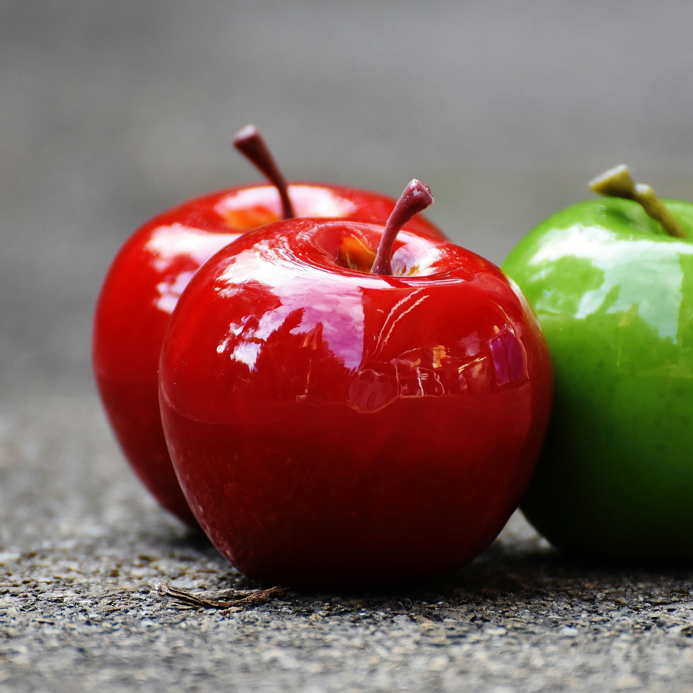

Apel Apel merupakan jenis buah-buahan, atau buah yang dihasilkan dari pohon apel. Buah apel biasanya berwarna merah kulitnya jika masak dan siap dimakan, tetapi bisa juga kulitnya berwarna hijau atau kuning. Kulit buahnya agak lembek dan daging buahnya keras. Buah apel memiliki beberapa biji di dalamnya. |
|